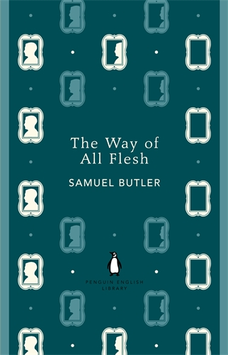
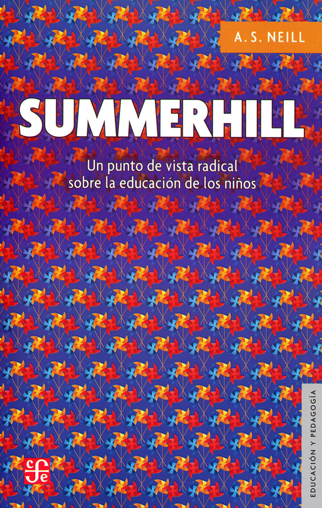

1:15:08 · 7 OPERE
Erich Fromm: Disobbedienza come problema morale o psicologico.
Il filo del discorso
La registrazione propone una conferenza originale in inglese di Erich Fromm, seguita dalle domande del pubblico. Il suo punto di partenza è che obbedienza e disobbedienza non possano essere giudicate senza chiedere a che cosa si obbedisce e perché. La Genesi, Prometeo e Antigone offrono tre figure attraverso cui leggere il rapporto fra rifiuto, libertà e responsabilità. L’avvertimento sulla guerra nucleare colloca il discorso nel contesto della guerra fredda.
Leggi la sintesi completaRiduci la sintesi
Fromm distingue la coscienza autoritaria, che interiorizza comandi e divieti, dalla coscienza umanistica, orientata allo sviluppo della vita. Distingue inoltre l’autorità razionale, fondata sulla competenza, da quella irrazionale, sostenuta dalla forza e dalla paura. La sua critica non chiede di respingere qualsiasi autorità: un insegnante o un capitano possono avere ragioni fondate per guidare gli altri. Anche la disobbedienza automatica, priva di un criterio, gli appare insufficiente. La difficoltà di dire no viene collegata al desiderio di sicurezza e alla rinuncia al peso della scelta. Con metafore psicoanalitiche e riferimenti all’educazione, Fromm descrive il passaggio dall’ordine manifesto a forme di pressione anonime. Il romanzo di Butler illustra il conflitto con l’autorità familiare; la burocrazia rappresenta invece il rischio di sostituire il giudizio umano con il buon funzionamento dell’organizzazione. La lettura di Eichmann è una sua interpretazione del comportamento burocratico e non cancella la responsabilità storica e penale del criminale nazista. Il confronto finale precisa e mette alla prova queste idee. Si discutono Marx e i suoi interpreti, il libro Summerhill di Neill, i criteri della vitalità, l’obiezione di coscienza, lo Zen e il dissenso giovanile. Fromm riconosce differenze fra i sistemi politici che accosta e non presenta come specializzazione universale la propria competenza. Quando un ascoltatore corregge l’analogia della giuria, accetta il limite del paragone; alla fine rifiuta di commentare un episodio che non ricorda abbastanza. Il valore del giudizio autonomo emerge così anche dalla disponibilità a precisare, correggere e sospendere una risposta.
I libri nel discorso

La disobbedienza come problema psicologico e morale
Identificazione probabile
Note sul riferimento
Copertina: Mondadori, Oscar Saggi Baobab, 2022
Copertina della raccolta La ricerca di essere. Il volume contiene La disobbedienza e altri saggi, che include La disobbedienza come problema psicologico e morale. L'edizione non è attribuita al video.
Riferimento ricavato dalla trascrizione automatica.

Genesi
Identificazione probabile
Note sul riferimento
Copertina: Einaudi, I libri della Bibbia / Einaudi Tascabili, 2000; introduzione di Steven Rose
Copertina dell’edizione autonoma Genesi, nella serie I libri della Bibbia, con introduzione di Steven Rose. Edizione scelta come riferimento iconografico; nessuna edizione è confermata nel video.
Riferimento ricavato dalla trascrizione automatica.

Prometeo incatenato
Identificazione probabile
Note sul riferimento
Copertina: Lindau · Biblioteca di classici · 2015 · a cura di Enzo Mandruzzato
Immagine autentica dell’opera, controllata visivamente; non identifica l’edizione usata nel video.
Riferimento ricavato dalla trascrizione automatica.

Antigone
Note sul riferimento
Copertina: Einaudi · Collezione di teatro · edizione di riferimento
Immagine associata all’ISBN di riferimento e controllata visivamente; edizione e traduzione non identificate come quelle citate o lette nel video.
Riferimento ricavato dalla trascrizione automatica.

The Way of All Flesh
Note sul riferimento
Copertina: Penguin English Library, ebook pubblicato 31 maggio 2012; originale postumo 1903
Copertina autentica della medesima opera; edizione illustrativa successiva alla conferenza, non attribuita al suo esemplare.
Riferimento ricavato dalla trascrizione automatica.

Manifesto del Partito comunista
Note sul riferimento
Copertina: Einaudi · ET Saggi · 2014
Copertina dell’edizione Einaudi del Manifesto, che comprende anche altri scritti e materiali. Nel video il rinvio al testo resta un’allusione probabile, senza identificazione dell’edizione.
Riferimento ricavato dalla trascrizione automatica.

Summerhill: A Radical Approach to Child Rearing
Note sul riferimento
Copertina: Fondo de Cultura Económica, edizione spagnola 2018; prima traduzione spagnola 1963, originale inglese USA Hart 1960
Copertina autentica della medesima opera; edizione illustrativa successiva alla conferenza, non attribuita al suo esemplare.
Riferimento ricavato dalla trascrizione automatica.